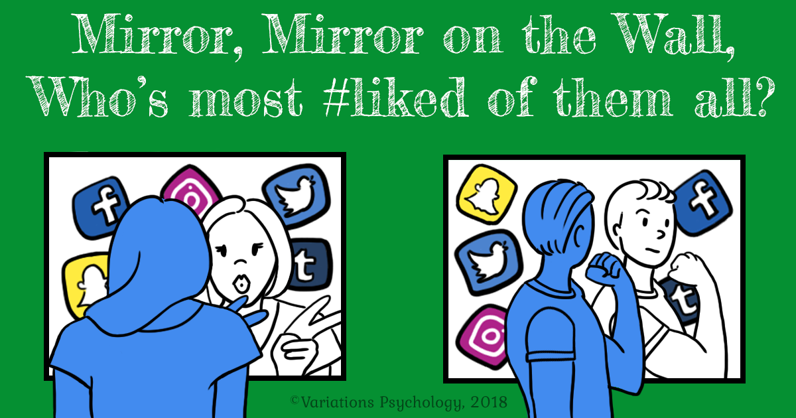

Social comparison is a psychological concept where people evaluate their own lives by comparing themselves to others. Social media makes this comparison easier because users constantly see posts about achievements, vacations, and personal milestones.
Most people share the highlights of their lives online rather than everyday struggles. This can create the impression that others are happier or more successful.
As a result, some users may feel lower self-esteem or dissatisfaction with their own lives when they compare themselves to others online.

Back to Home